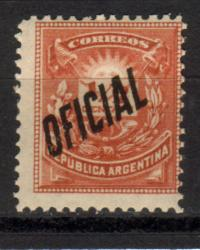
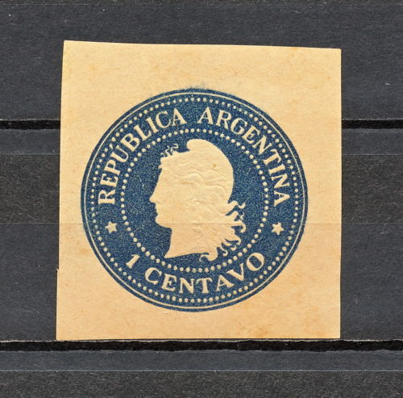
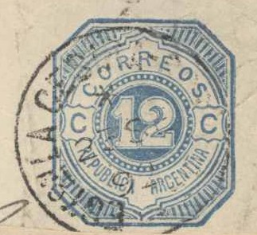
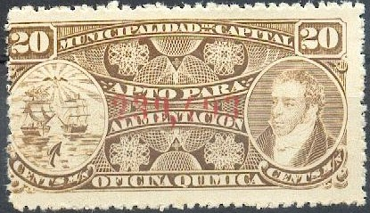

Return To Catalogue - Argentine - Corrientes and Buenos Aires
Note: on my website many of the
pictures can not be seen! They are of course present in the
catalogue;
contact me if you want to purchase it.
From 1884 to 1901 various stamps were overprinted "OFICIAL" to be used as official stamps. Many of these overprints are rare. Example:

These overprints have been forged by Fournier, example of such overprints taken from a Fournier Album:

Two forged "OFICIAL" overprints

1 c grey 2 c brown 5 c red 10 c green 30 c blue 50 c orange
Value of the stamps |
|||
vc = very common c = common * = not so common ** = uncommon |
*** = very uncommon R = rare RR = very rare RRR = extremely rare |
||
| Value | Unused | Used | Remarks |
| 1 c | c | c | |
| 2 c | * | c | |
| 5 c | * | c | |
| 10 c | * | c | |
| 30 c | ** | * | |
| 50 c | * | * | |
From 1911 onwards, several postage stamps were overprinted with one or two letters. Examples:


('M.I' and 'M.R.C.' overprint)
The following letters exist: "M.A." (ministry of agriculture), "M.G." (ministry of war), "M.H." (treasury), "M.I." (ministry of internal affairs), "M.J.I." (ministry of justice), "M.M." (navy), "M.O.P" (ministry of public works) and "M.R.C." (ministry of foreign affairs).
I've also seen a 1 c blue in this design used for printed matter
(wrapper).

Head in circle, I've also seen a 1/2 c blue, 1 c brown, 2 c
green, 4 c grey and 5 c red.
Head in circle, but with more 'wavy' hair at the back of the
woman's head. I've also seen 1/2 c orange, 2 c blue and 12 c blue
in this design.
I've also seen a 2 c brown in this design.

1878 Reduced sizes, the 8c also exists without the '5 5'
surcharge; a 24 c blue should also exist.
(Reduced sizes)

1882 issue, value in a circle; 12 c blue.

1888; 5 c red, similar to the postage stamps of that time.


Same design as the postage stamps of 1882; 1/2 c brown
1/4 c green 1/4 c red 1/2 c grey 1/2 c blue 1/2 c red 1 c black 1 c blue 'UN' c grey 'UN' c red (see image above)
Tobacco tax, 1/5 c red "VALOR ADICIONAL TABACOS
IMPORTADOS"
Example:
(1869 Revenue stamp)

In the above design ("MUNICIPALIDAD DE LA
CAPITAL APTO PARA ALIMENTACION", 1894) exist: 1 c green, 1 c
grey, 2 c brown, 2 1/2 c green, 5 c blue, 5 c green, 10 c brown,
15 c brown, 20 c grey, 20 c brown, 25 c green, 25 c grey, 30 c
green(?), 30 c orange, 40 c blue, 40 c red, 50 c orange and 50 c
blue.
If I'm informed well similar stamps with inscription
"CONSUMO" instead of "ALIMENTACION" exist in
the values 5 c red and 5 c brown.
Ley de Sellos 1917
Woman's head, inscription "LEY DE SELLOS 1908", I have
seen several values with inscription on top either
"PRIMERA", "SEGUNDA" or "TERCERA".
"PROVINCIA DE LA RIOJA LEY DE SELLOS", 1908?
Many stamps were issued in the above designs in
many colours and with inscriptions "LEY DE MULTAS",
"LEY DE GUIAS", "LEY DE VINOS", "LEY DE
BOSQUES", "LEY DE SELLOS". In the bottom part the
year is indicated.
10 c red 40 c blue
Inscription "FERRO CARRIL SANTA FE A LAS COLONIAS" 10 c grey 40 c red Inscription "TELEGRAFO TRASANDINO" 10 c red 40 c orange Inscription "FERRO-CARRIL ANDINO" 10 c grey 40 c blue Inscription "FERRO-CARRIL BUENOS AIRES Y PTO. DE LA ENSENADA" 10 c red 40 c brown Inscription "FERRO-CARRIL CENTRAL NORTE" 10 c blue 40 c lilac Inscription "FERRO-CARRIL ARGENTINO DEL ESTE" 10 c blue 40 c brown Inscription "FERRO-CARRIL BUENOS-AIRES AL PACIFICO" 10 c brown 40 c blue Inscription "COMPANIA TELEGRAFICA DEL RIO DE LA PLATA" 10 c orange 40 c grey Inscription "FERRO-CARRIL OESTE ARGENTINO" 10 c red 40 c red
{kind=link}
{kind=link}
{kind=link}